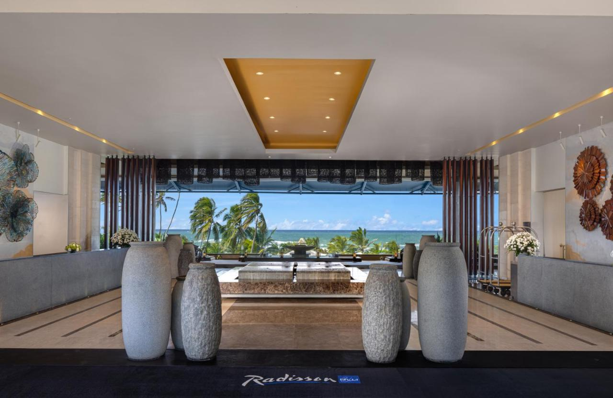

A historical city located in Southwestern Sri Lanka is an Asian tourist
haven today and many are flocking from around the world to this
beautiful place! A stunning fort, Dutch colonial architecture and
beaches; there is no shortage of places to visit in Galle and around.
Whether you are an artist, a poet, a photographer or something else; you
will fall in love with Sri Lanka! So, if you are planning a visit to
Galle, Sri Lanka this year, don't worry about the best experiences.
Boasting beautiful views of the Indian Ocean, the hilltop
Jetwing Lighthouse is 2 km from Galle’s centre. Minimalistic and
elegant, this luxurious colonial-style hotel features 4 dining
options, 2 outdoor pools, and a spa. Jetwing’s spacious rooms
have a private balcony and a dressing room. Each room has cable
TV, a DVD player, and tea/coffee making facilities. The attached
bathroom is fitted with a bathtub and shower. Guests can join a
yoga class, exercise in the gym, or play tennis. The hotel
arranges whale watching trips and city tours. Services include
laundry, car rental and currency exchange. Wi-Fi is free
throughout the hotel. Open 24 hours, Cardamom Café offers light
meals and refreshments. Anchor Bar and Grill serves sandwiches
and grilled dishes. Coats of Arm Bar features a pool table and
library, as well as sweeping ocean views. Jetwing Lighthouse is
146 km from Colombo’s Bandaranaike International Airport. It is
easily accessible from attractions like Galle Fort, Galle
Markets and the shopping street.

Radisson Blu Resort Galle
Located in the historic fort city of Galle on the southern coast
of Sri Lanka, Radisson Blu Resort, Galle is a luxury resort
featuring rooms and suites, an outdoor pool with a pool bar, spa
and fitness centre. All rooms boast of a direct view of the
Indian Ocean, carefully designed to offer living spaces with a
40-inch LED TV, complimentary Wi-Fi, work desk, mini bar, tea
and coffee making and ironing facilities. The bathrooms offer a
rain shower, complimentary toiletries, bathrobe and bath
slippers and hair dryers. Fusion is Radisson Blu Resort, Galle’s
signature all-day dining restaurant serving a buffet breakfast.
A range of Asian and International cuisine is prepared from live
cooking stations using only fresh and hand-picked produce, and
is available for lunch and dinner. Bommu Rooftop Bar offers a
panoramic view of the surroundings along with cocktails and
finger foods.